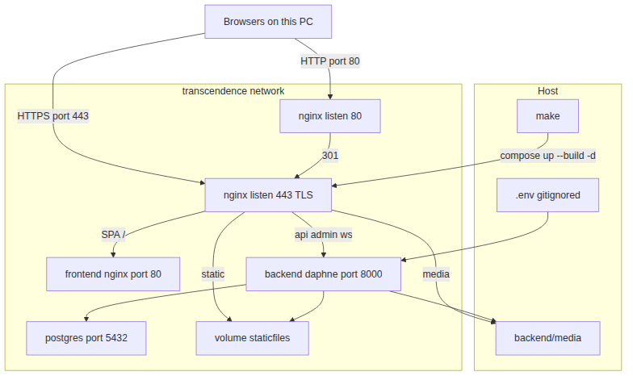
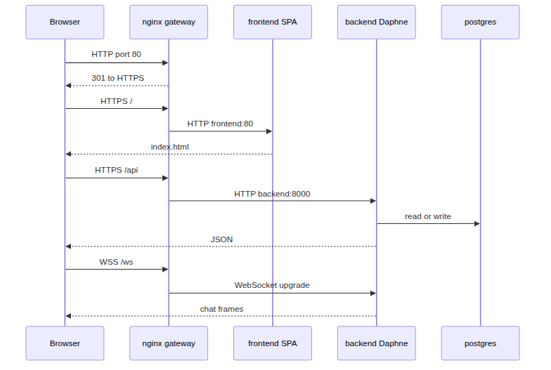
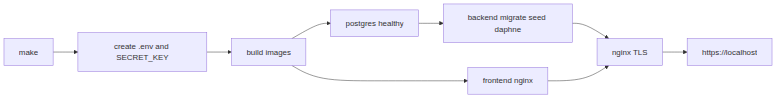
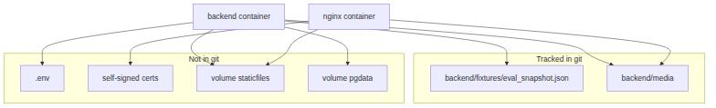

Open this file in a browser if the graphs do not show inside the editor. Eval: make. Daily: make db then Vite.
Only nginx is public on the eval stack. Frontend, backend, and Postgres stay on the private network. Daily make db publishes Postgres on localhost:5432.

HTTP redirects to HTTPS. The gateway then splits SPA, API, and WebSocket traffic.


